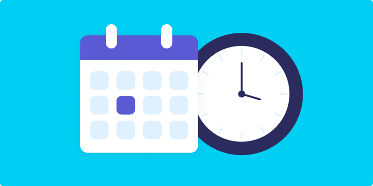

Priorities and Scheduling
One tip for college students is to prioritize their time and make a schedule to help them stay organized and on track with their studies and other responsibilities. This can include setting aside dedicated blocks of time for classes, homework, studying, extracurricular activities, and even relaxation and self-care. By creating a schedule and sticking to it, students can make the most of their time and ensure that they are able to balance their various commitments effectively. Additionally, they can use this schedule to plan ahead and avoid last-minute stress or rushed assignments.
Resources and Support
Another tip for college students is to take advantage of the resources and support available on campus. Many colleges and universities offer tutoring services, study groups, and other forms of academic support to help students succeed in their classes. In addition, there are often resources available for mental health support, career counseling, and other areas that can help students navigate the challenges of college life. By seeking out and utilizing these resources, students can get the support they need to succeed in their studies and achieve their goals.
Take your mind off things sometimes!
Another college tip for students is to get involved in extracurricular activities and campus organizations. Participating in clubs, sports teams, and other extracurricular activities can provide a sense of community and belonging, as well as opportunities for personal and professional growth. These activities can also help students develop new skills, make connections, and have fun outside of the classroom. By getting involved on campus, students can enhance their college experience and set themselves up for success after graduation.

Futureproofing your experience
Another college tip for students is to build and maintain a network of connections. Developing relationships with professors, classmates, and others in the college community can provide valuable support, advice, and opportunities. Building a strong network can also help students get access to internships, job opportunities, and other valuable experiences. Additionally, staying in touch with these connections after graduation can be beneficial for personal and professional growth. College is a great time to start building and nurturing these relationships, so students should make an effort to connect with others on campus.